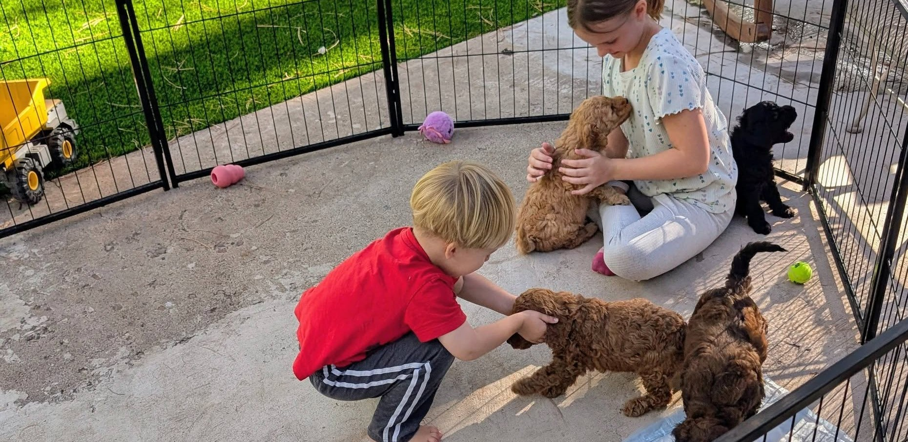
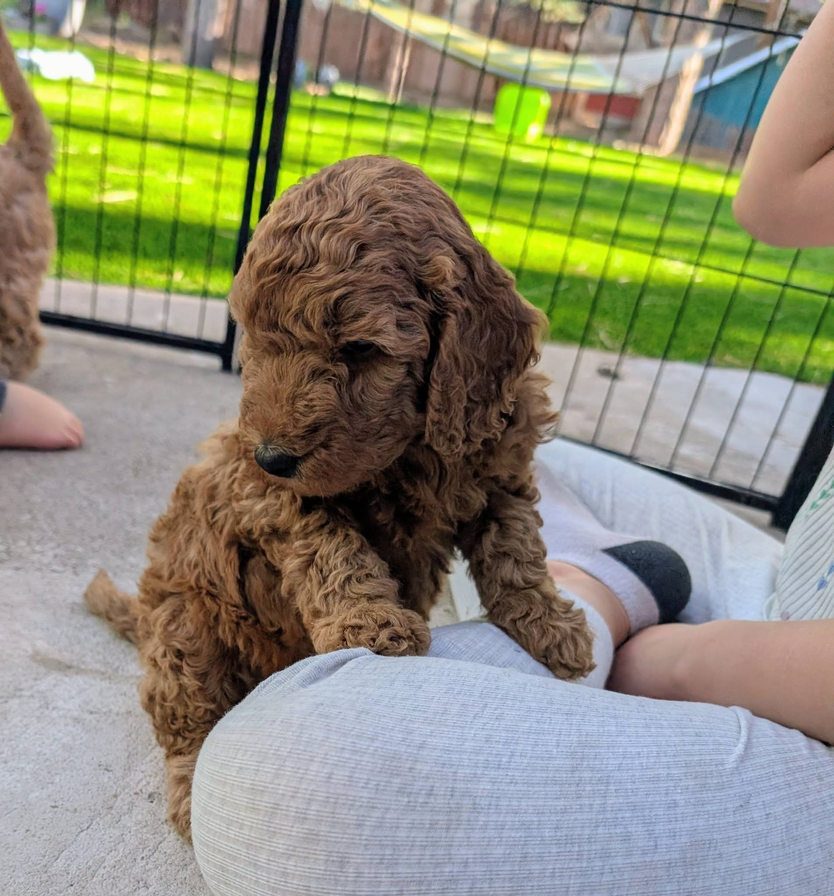
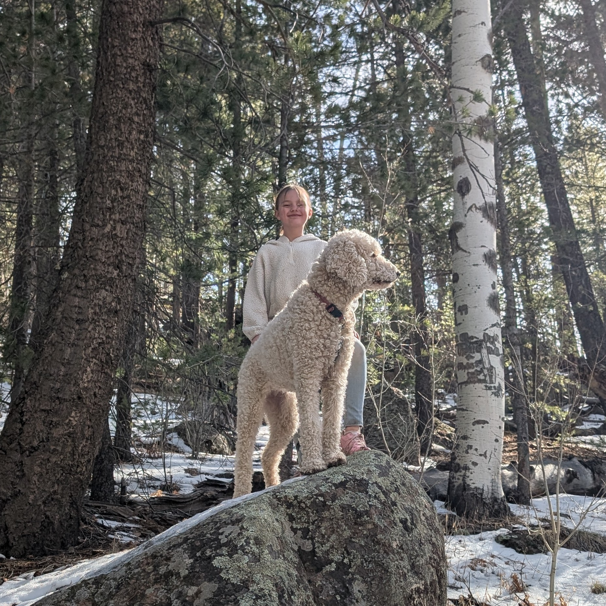

Raising wonderful companions since 2021
Raising wonderful companions since 2021

It's no secret that training a puppy can be difficult so let's try to make this as painless as possible. The good news is that the dogs we breed tend to be pretty easy to deal with as puppies compared to most breeds. That being said, you will have some work to do with your future pup and crate training is by far the best way to begin.

Create a den. The crate will act as their "den" and you will want to make it as nice as possible for them. This does not mean give him/her a ton of room inside the crate. You will actually need to give them just enough space to lay down comfortably. When deciding on which crate to buy keep that in mind, In order to save you money we recommend purchasing a large crate with a divider. This way you can adjust the size of the crate as your puppy grows without purchasing several crates over their lifetime.
Make it worth it. For best results use high value, protein rich treats for training such as liver, beef, chicken, or turkey jerky.
Optional: Clicker Tool and Doggy Doorbell
You can train your puppy to use a bell as a way to alert you when they need to be let out. It's pretty convenient but you should be a couple weeks into basic potty training before introducing the bell.
The clicker tool is a useful way to let your dog know they did something right. The clicker basically replaces the need for a "Good girl" or "Good boy" and you are able to expedite the training process in a way. For help with clicker training feel free to reach out to us!
Let us help. If the training process seems stressful to you; you may want to consider enrolling your puppy into our 3-week training program. It begins after you select your puppy at 6 weeks and we aim to have them completely crate trained, leash trained and we also work on basic behavioral commands. You'll get video updates via text of their progress.
What will YOUR DOG learn with the training program?

I used the program Pet Partners to get my dog prepped and registered as a therapy dog. It was advanced training. I highly recommend it!
One other course called BAXTER & Bella was amazing and it’s all online! The one draw back from this training course is that your dog doesn’t get a chance to practice things like getting in the car and attending a class where your pup can socialize with other dogs.